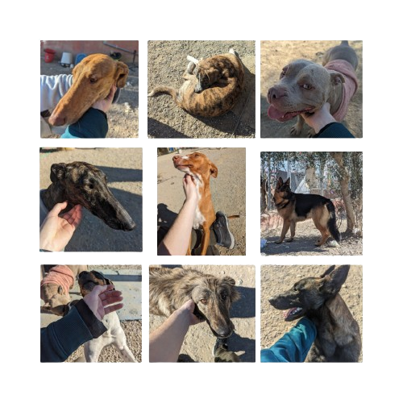

RESCATE ANIMALES GRANADA
Refugio sin animo de lucro donde un equipo de 40 voluntarios trabajamos para darle a estos
perretes una segunda oportunidad, ya que merecen ser queridos y tener un hogar donde ser felices :)
Nos puedes encontrar en Las Gabias (Granada) y los sabados tenemos un mercadillo solidario en
tienda animal (centro comercial nevada)
